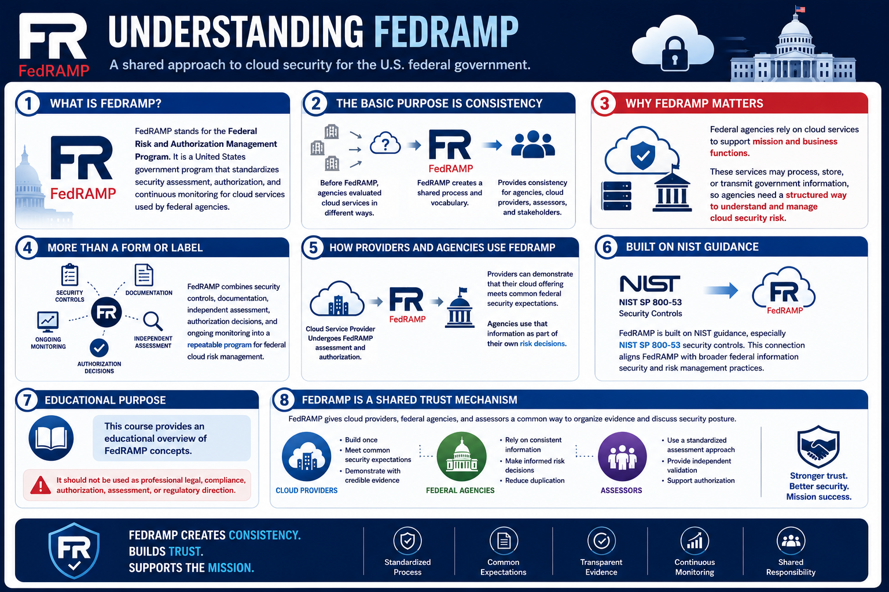

What Is FedRAMP?
Introduction to FedRAMP
Connecting to LMS... Progress: in progress
Version 1.0 | Date: 2026-06-16 | Educational overview of FedRAMP concepts.

Narration
FedRAMP stands for the Federal Risk and Authorization Management Program. It is a United States government program that standardizes security assessment, authorization, and continuous monitoring for cloud services used by federal agencies.
The basic purpose is consistency. Before FedRAMP, agencies could evaluate cloud services in different ways, which created duplicated work and uneven expectations. FedRAMP gives agencies, cloud providers, assessors, and stakeholders a shared process and vocabulary.
FedRAMP matters because federal agencies rely on cloud services to support mission and business functions. Those services may process, store, or transmit government information, so agencies need a structured way to understand and manage cloud security risk.
FedRAMP is not simply a form or a product label. It combines security controls, documentation, independent assessment, authorization decisions, and ongoing monitoring into a repeatable program for federal cloud risk management.
A cloud service provider may use FedRAMP to demonstrate that its cloud offering has been assessed against common federal security expectations. Agencies can then use that information as part of their own risk decisions.
The program is built on NIST guidance, especially NIST SP 800-53 security controls. That connection helps FedRAMP align with broader federal information security and risk management practices.
This course provides an educational overview of FedRAMP concepts. It should not be used as professional legal, compliance, authorization, assessment, or regulatory direction.
The most useful way to think about FedRAMP is as a shared trust mechanism. It gives cloud providers, federal agencies, and assessors a common way to organize evidence and discuss security posture.